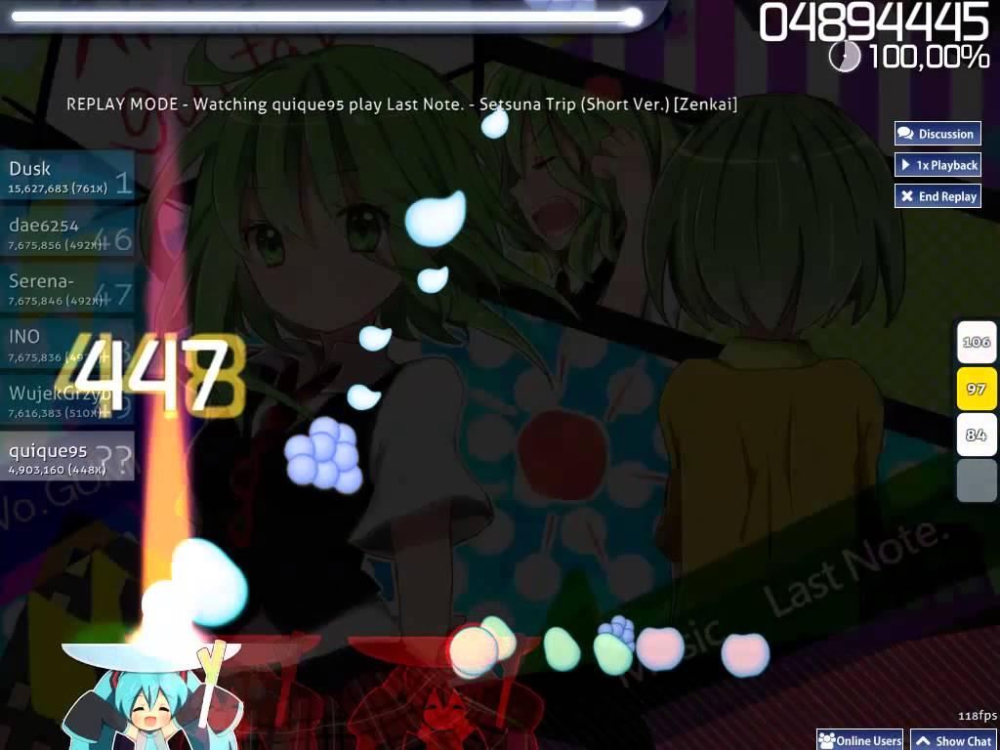

О Режимах игры:
Основной режим osu представляет из себя последовательность из нот, слайдеров и спиннеров. Игровой процесс заключается в нажатии появляющихся на экране нот, ведению мячика по слайдерам, а также вращении спиннера. Вокруг игровых объектов появляются сужающиеся окружности. Нажать нужно в момент совпадения окружности с игровым объектом. В зависимости от точности попадания в такт музыки, начисляются очки, за неправильное выполнение действий у игрока отнимаются «жизни», по истечению которых засчитывается поражение. Место игрока в таблице рекордов определяется количеством очков, основным фактором в наборе которых является комбо - непрерывное попадение по серии игровых объектов.

Осу не ограничевается стандартным режимом игры. Тайко — режим игры в osu!, повторяющий элементы игры
Taiko no Tatsujin (Тайко но Тацудзин), также известной как Taiko: Drum Master в Америке. В этом режиме
эмулируется игра на японском барабане. Игроку нужно нажимать на красные и синие кружки на конвейере,
которые, в свою очередь, эмулируют удар по центру или краю барабана.
По умолчанию, для красных нот (don) используются кнопки X и С, для синих (kat) — Z, V.
Большая красная или синяя нота означает, что нужно нажать обе кнопки одновременно.
Также в модификации имеется подобие слайдера (драмрол): он жёлтого цвета, от его выбивания не
растёт комбо, однако, даются очки за каждое нажатие по «частичке» слайдера. Нажимать нужно со
скоростью песни, если делать это быстрее, то очки засчитываться не будут. Ещё в этой модификации
присутствуют элементы похожие на спиннер (денден): он как и драмрол не влияет на количество комбо,
по окончанию выбивания дендена дают призовые очки. Чтобы его выбить используйте чередование красных
и синих нот.
osu!mania — режим игры в osu!, симулирующий игру Beatmania IIDX (а также различные DJMAX,
Guitar Hero и другие) в котором игроку нужно нажимать ноты на конвейере.
Он немного похож на Тайко, но различных кнопок больше. Этот режим собрал практически все
основные ритм-игры, где по конвейеру бегут ноты, и надо вовремя и как можно точнее на них
нажать. Хоть режим игры изначально повторяет Beatmania IIDX, меняя количество кнопок,
можно сделать её похожей и на Guitar Hero, и на Dance Dance Revolution, и на что только
пожелаете. То есть, от 1 до 9 кнопок.
Скорость падения нот регулируется в игре при помощи клавиш F3/F4.
Стандартное управление:
- Для левой руки — S, D, F.
- Для правой руки — J, K, L.
- Центральная кнопка — пробел.
- «Особая» кнопка — левый Shift.
Catch the Beat (дословно переводится как «поймай ритм») — режим игры в osu!, где игроку предлагается ловить фрукты в тарелку под музыку. В этом режиме всего 3 кнопки для управления: стрелки для перемещения персонажа влево — вправо и Shift для ускорения движения персонажа в 2 раза. Также в игре существует «супер-ускорение» (англ. Hyperdash), которое задействуется тогда, когда персонаж не может поймать фрукты даже с обычным ускорением. Выглядит это как красный светящийся фрукт, и когда персонаж его ловит, то он ускоряется ровно до той скорости, чтобы поймать следующий фрукт, не сорвав комбо.
Каждый режим, по-сути, представляет из мебя отдельную игру. У всех есть свои ньюансы, и маппинг для каждого из режимов отличается. Этот сайт будет ориентирован на стандартный режим.